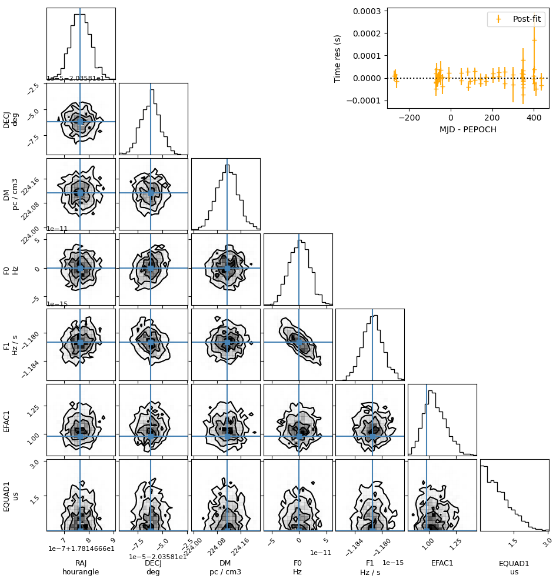

Command line utilities
The pyvela package included a few command line utilities.
pyvela script
The pyvela script can be used to do simple analysis runs where fine control over data handling, prior distributions, sampler, etc is not necessary. It has the followingb syntax.
$ pyvela -h
usage: pyvela [-h] [-J JLSO_FILE] [-P PRIOR_FILE] [--no_marg_gp_noise] [-A ANALYTIC_MARG [ANALYTIC_MARG ...]] [-T TRUTH] [-C CHEAT_PRIOR_SCALE] [-o OUTDIR] [-f] [-N NSTEPS] [-b BURNIN]
[-t THIN] [-r] [-s INITIAL_SAMPLE_SPREAD]
par_file tim_file
A command line interface for the Vela.jl pulsar timing & noise analysis package. Uses emcee for sampling. This may not be appropriate for more complex datasets. Write your own scripts for
such cases.
positional arguments:
par_file The pulsar ephemeris file. Should be readable using PINT. The uncertainties listed in the file will be used for 'cheat' priors where applicable.
tim_file The pulsar TOA file. Should be readable using PINT. Either this or a JLSO file (-J) should be provided.
options:
-h, --help show this help message and exit
-J JLSO_FILE, --jlso_file JLSO_FILE
The JLSO file containing pulsar timing and noise model & TOAs created using `pyvela-jlso`. JLSO files may need to be recreated after updating `Vela.jl` since the
data format may change. These files are faster to read and parse. (default: None)
-P PRIOR_FILE, --prior_file PRIOR_FILE
A JSON file containing the prior distributions for each free parameter. (Ignored if `-J` option is used.) (default: None)
--no_marg_gp_noise Don't analytically marginalize the correlated Gaussian noise amplitudes. (default: False)
-A ANALYTIC_MARG [ANALYTIC_MARG ...], --analytic_marg ANALYTIC_MARG [ANALYTIC_MARG ...]
Parameters to analytically marginalze (only some parameters are allowed). (default: [])
-T TRUTH, --truth TRUTH
Pulsar ephemeris file containing the true timing and noise parameter values. Relevant for simulation studies. (default: None)
-C CHEAT_PRIOR_SCALE, --cheat_prior_scale CHEAT_PRIOR_SCALE
The scale factor by which the frequentist uncertainties are multiplied to get the 'cheat' prior distributions. (default: 100)
-o OUTDIR, --outdir OUTDIR
The output directory. Will throw an error if it already exists (unless -f is given). (default: pyvela_results)
-f, --force_rewrite Force rewrite the output directory if it exists. (default: False)
-N NSTEPS, --nsteps NSTEPS
Number of ensemble MCMC iterations (default: 6000)
-b BURNIN, --burnin BURNIN
Burn-in length for MCMC chains (default: 1500)
-t THIN, --thin THIN Thinning factor for MCMC chains (default: 100)
-r, --resume Resume from an existing run (default: False)
-s INITIAL_SAMPLE_SPREAD, --initial_sample_spread INITIAL_SAMPLE_SPREAD
Spread of the starting samples around the default parameter values. Must be > 0 and <= 1. 0 represents no spread and 1 represents prior draws. (default: 0.3)This command created saves the MCMC chain and related metadata into an output directory. This includes the following files. The parameter order in all of these files is the same.
summary.json: AJSONfile containing information about the inputs and the system environment. Useful for debugging.- The input
parandtimfiles - The "truth"
parfile (optional, only relevant for simulations) - The input
JSONfile containing user defined priors. prior_info.json:JSONfile containing the prior distribution for all parameters, including user-defined, default, and 'cheat' priors.samples.npy: Thenumpyformat file containing the flattened and burned-in MCMC chain. This can be read usingnumpy.load().samples_raw.npy: Same assamples.npy, but the quantities here are inVela.jl's internal units.param_names.txt: An ordered list of free model parameter names following thePINTconventions.param_prefixes.txt: An ordered list of free model parameter prefixes following thePINTconventions.param_scale_factors.txt: An ordered list of scale factors which convert parameter values fromPINTunits toVela.jl's internal units. The values insamples.npyandsamples_raw.npyare related by these scale factors.params_median.txt: The posterior median sample estimated from the MCMC chainparams_std.txt: The parameter standard deviations estimated from the MCMC chainparam_units.txt: Parameter units represented asastropy.units-compatible strings. Empty rows represent dimensionless quantities.param_default_values.txt: "Pre-fit" values taken from the input par file.param_autocorr.txt: MCMC autocorrelation length for each free parameter.<PSR>.median.par: A "post-fit"parfile containing the posterior median values taken from the MCMC chain.residuals.txt: Post-fit residuals computed using the posterior median values.prior_evals.npy: The prior distributions evaluated within the posterior distribution range. Used for plotting.prior_info.json: AJSONfile containing information about all prior distributions used for the analysis.- A
JLSOfile that serializes theSPNTAobject. chain.h5: HDF5 file containing all samples.
pyvela-plot script
Creates a corner plot from a directory containing the output of the pyvela script. The plots are not publication-quality.
$ pyvela-plot -h
usage: pyvela-plot [-h] [-I IGNORE_PARAMS [IGNORE_PARAMS ...]] result_dir
Create a corner plot from pyvela results.
positional arguments:
result_dir A directory containing the output of the `pyvela` script.
options:
-h, --help show this help message and exit
-I IGNORE_PARAMS [IGNORE_PARAMS ...], --ignore_params IGNORE_PARAMS [IGNORE_PARAMS ...]
Parameters to exclude from the corner plot.The output looks like this: 
pyvela-jlso script
Creates a JLSO file that is a serialization of the Vela.TimingModel and Vector{Vela.TOA} objects from a pair of par and tim files and optionally a prior file. This is useful for reducing the input reading overhead while running repeated analyses on the same input files. The resulting JLSO file can be passed on to the pyvela script through the -J option.
$ pyvela-jlso -h
usage: pyvela-jlso [-h] [-P PRIOR_FILE] [-C CHEAT_PRIOR_SCALE] -o OUTFILE par_file tim_file
Read a par file, tim file, and prior JSON file, and write a JLSO file.
positional arguments:
par_file The pulsar ephemeris file. Should be readable using PINT. The uncertainties listed in the file will be used for 'cheat' priors where applicable.
tim_file The pulsar TOA file. Should be readable using PINT.
options:
-h, --help show this help message and exit
-P PRIOR_FILE, --prior_file PRIOR_FILE
A JSON file containing the prior distributions for each free parameter.
-C CHEAT_PRIOR_SCALE, --cheat_prior_scale CHEAT_PRIOR_SCALE
The scale factor by which the frequentist uncertainties are multiplied to get the 'cheat' prior distributions.
-o OUTFILE, --outfile OUTFILE
The output file name. Will replace an existing file.